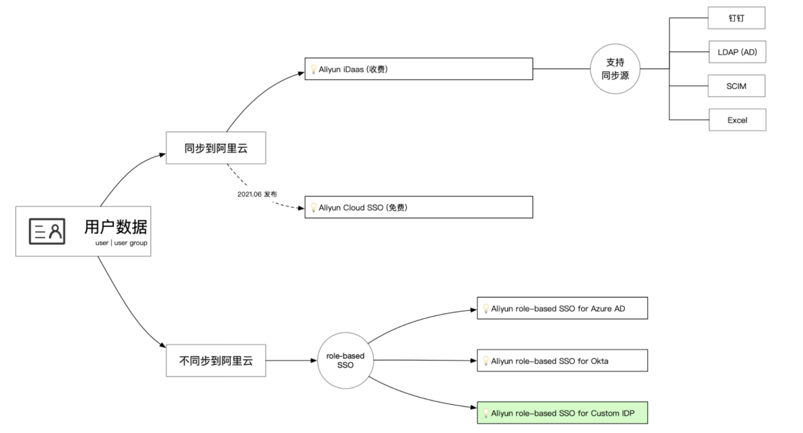
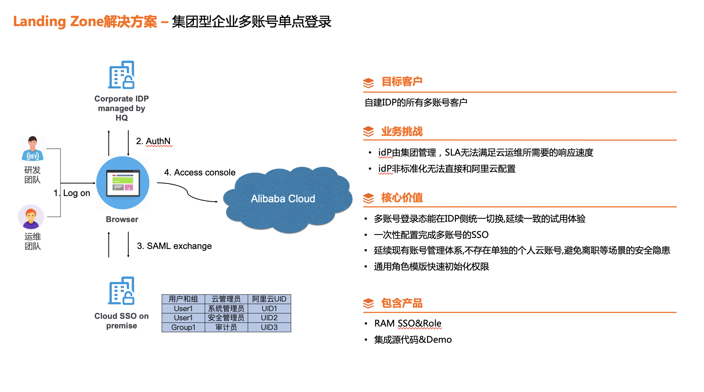

该方案有何用途？
- 众所周知,身份和权限管理系统是企业必不可少的核心,主要解决两个问题:
- • 你是谁?
- • 你有什么权限?
- 在企业还没有上云前,一般有已经有成熟的身份权限系统.上云后要考虑就是如何优雅的把云服务商的身份权限嫁接到现有系统中.这样做的好处也非常明显,和云厂商打通SSO后,员工将不再持有云厂商的用户名,密码.而且整个生命周期都无缝的集成到了企业现有的人员管理流程中,当离职,转岗的时候就能避免因为权限没有及时回收导致的风险.本方案指导帮助企业客户集成阿里云的SSO。
方案适用场景
- 在开始前,我们看看改方案的适用场景。这里主要有两个大方向的选择需要确定
- 1. 同步用户数据到阿里云
- 2. 不同步用户数据到阿里云 (这个方案适合的几个场景)
- • 有自己的云管平台(CMP),后面有成熟的人员管理体系
- • 人员管理系统维护在别的团队,每次对接很麻烦,希望云管理团队自己来维护这个关系
- 具体的选择逻辑看下图

